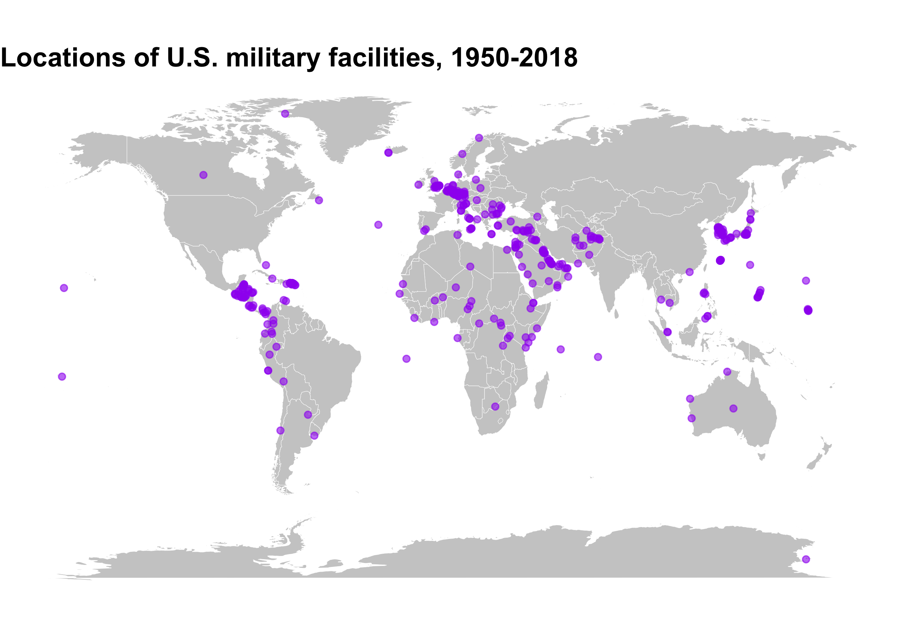

The goal of the troopdata package is to facilitate the distribution of military deployment and basing data for use in social science research and journalism. The troop deployment data were initially compiled by Tim Kane using information obtained from the U.S. Department of Defense’s Defense Manpower Data Center (DMDC). The original data ended in 2005 and we have updated it to run through 2020. Similarly, the basing data were initially compiled by David Vine, and we have updated the original data using open source information from the U.S. military and press reports through 2018. We have also assembled this R package to allow users to more easily access the data and use it in their own research.
The package will be updated with additional features in the future, but for now please let me know if you find any errors.
Please refer to the bottom of this page for citation information.
You can also find more information on the package and changes corresponding to each update here: https://meflynn.github.io/troopdata/index.html
Installation
You can install the troopdata package from CRAN or GitHub with:
#install.packages("devtools")
install.packages("troopdata")
or
devtools::install_github("meflynn/troopdata")Use
This package currently has two functions:
get_troopdata(): Returns a data frame containing country-year U.S. military deployment values. Depending on the arguments specified, either total troop deployments, or total deployments plus service branch-specific deployment values, are returned.
get_basedata(): Returns a data frame containing information on U.S. military bases around the globe from the Cold War forward. Depending on the arguments specified the function will return the entire data set or data for a particular country. Observations can be site-specific or can be aggregated to generate country counts.
get_builddata(): Returns a data frame containing geocoded location-year information on U.S. military overseas construction spending. Users can specify select countries and years, or call the entire data frame. Currently only select countries are included in the data
Example
get_troopdata
The first function of this package is the get_troopdata() function. At its most basic this function returns a data frame of country-year troop deployment values for the selected time period, using the startdate and enddate parameters.
For users who want more refined data, the host argument and the branch arguments allow users to specify the set of host countries for which they would like data returned. This must be a single numerical value equal to a Correlates of War (COW) Project country code, a single character value equal to an ISO3C country code, or a vector of similar values. Note they must be consistent (i.e. they must all be numeric COW codes or ISO3C character codes).
For example, you can use a numeric vector of COW country codes:
# Let's make the host selection more specific
hostlist <- c(200, 220)
example <- get_troopdata(host = hostlist, startyear = 1990, endyear = 2020)
#> Warning in if (is.na(host)) {: the condition has length > 1 and only the first
#> element will be used
#> Warning in if (host == "region") {: the condition has length > 1 and only the
#> first element will be used
head(example)
#> # A tibble: 6 x 6
#> countryname ccode iso3c year troops region
#> <chr> <dbl> <chr> <dbl> <dbl> <chr>
#> 1 United Kingdom 200 GBR 1990 25111 Europe & Central Asia
#> 2 United Kingdom 200 GBR 1991 23442 Europe & Central Asia
#> 3 United Kingdom 200 GBR 1992 20048 Europe & Central Asia
#> 4 United Kingdom 200 GBR 1993 16100 Europe & Central Asia
#> 5 United Kingdom 200 GBR 1994 13781 Europe & Central Asia
#> 6 United Kingdom 200 GBR 1995 12131 Europe & Central AsiaOr you can use a character vector of ISO3C codes.
hostlist.char <- c("CAN", "GBR")
example.char <- get_troopdata(host = hostlist.char, startyear = 1970, endyear = 2020)
#> Warning in if (is.na(host)) {: the condition has length > 1 and only the first
#> element will be used
#> Warning in if (host == "region") {: the condition has length > 1 and only the
#> first element will be used
head(example.char)
#> # A tibble: 6 x 6
#> countryname ccode iso3c year troops region
#> <chr> <dbl> <chr> <dbl> <dbl> <chr>
#> 1 Canada 20 CAN 1970 2643 North America
#> 2 Canada 20 CAN 1971 1835 North America
#> 3 Canada 20 CAN 1972 1742 North America
#> 4 Canada 20 CAN 1973 1362 North America
#> 5 Canada 20 CAN 1974 1580 North America
#> 6 Canada 20 CAN 1975 1301 North America
hostlist <- c(20, 200, 220)
example <- get_troopdata(host = hostlist, branch = TRUE, startyear = 2006, endyear = 2020)
#> Warning: Branch data only available for 2006 forward.
#> Warning in if (is.na(host)) {: the condition has length > 1 and only the first
#> element will be used
#> Warning in if (host == "region") {: the condition has length > 1 and only the
#> first element will be used
head(example)
#> # A tibble: 6 x 10
#> countryname ccode iso3c year troops army navy air_force marine_corps region
#> <chr> <dbl> <chr> <dbl> <dbl> <dbl> <dbl> <dbl> <dbl> <chr>
#> 1 Canada 20 CAN 2006 133 7 35 81 10 North~
#> 2 Canada 20 CAN 2007 141 7 41 84 9 North~
#> 3 Canada 20 CAN 2008 92 8 0 82 2 North~
#> 4 Canada 20 CAN 2009 91 8 0 83 0 North~
#> 5 Canada 20 CAN 2010 129 3 28 98 0 North~
#> 6 Canada 20 CAN 2011 128 7 38 83 0 North~
get_basedata
The second function, get_basedata() returns a data frame containing information on the United States’ overseas military bases going back to the beginning of the Cold War. At its most basic the function will return a data frame containing country-base observations, along with the facility’s longitude and latitude (if available), and a series of binary variables indicating whether or not the facility is a full military base, a smaller lilypad, and if it is a currently funded site.
baseexample <- get_basedata(host = NA, country_count = FALSE)
head(baseexample)
#> # A tibble: 6 x 9
#> countryname ccode iso3c basename lat lon base lilypad fundedsite
#> <chr> <dbl> <chr> <chr> <dbl> <dbl> <dbl> <dbl> <dbl>
#> 1 Afghanistan 700 AFG Bagram AB 34.9 69.3 1 0 0
#> 2 Afghanistan 700 AFG Kandahar Airfield 31.5 65.8 1 0 0
#> 3 Afghanistan 700 AFG Mazar-e-Sharif 36.7 67.2 1 0 0
#> 4 Afghanistan 700 AFG Gardez 33.6 69.2 1 0 0
#> 5 Afghanistan 700 AFG Kabul 34.5 69.2 1 0 0
#> 6 Afghanistan 700 AFG Herat 34.3 62.2 1 0 0As with the get_troopdata() function you can specify a numeric vector of COW country codes or a character vector of ISO3C codes to specify specific host countries.
For example, using COW country codes:
hostlist <- c(20, 200, 255, 645)
baseexample <- get_basedata(host = hostlist, country_count = FALSE)
#> Warning in if (is.na(host)) {: the condition has length > 1 and only the first
#> element will be used
head(baseexample)
#> # A tibble: 6 x 9
#> countryname ccode iso3c basename lat lon base lilypad fundedsite
#> <chr> <dbl> <chr> <chr> <dbl> <dbl> <dbl> <dbl> <dbl>
#> 1 Ascension Isla~ 200 GBR Ascension I~ -7.95 -14.4 1 0 0
#> 2 BR Indian Ocea~ 200 GBR Diego Garcia -7.32 72.4 1 0 0
#> 3 Canada 20 CAN <NA> 56.1 -106. 0 1 0
#> 4 Canada 20 CAN Argentia, N~ 47.3 -54.0 1 0 0
#> 5 Germany 255 DEU Amberg 49.4 11.9 1 0 0
#> 6 Germany 255 DEU USAG Ansbach 49.3 10.6 1 0 0And another using ISO3C codes:
hostlist.char <- c("CAN", "GBR", "PRI")
baseexample <- get_basedata(host = hostlist.char, country_count = FALSE)
#> Warning in if (is.na(host)) {: the condition has length > 1 and only the first
#> element will be usedFinally, users can also generate country-level counts of the number of U.S. military bases by changing the country_count argument to TRUE. Note that when using this argument you also need to specify the groupvar argument, which specifies which identifier will be used to generate country-level totals. Though this may sound obvious individual country codes may include multiple geographic territories that are more finely parsed using various identifiers. Accepted character strings include “countryname”, “iso3c”, and “ccode”. And while this may seem redundant given the host argument, it should provide flexibility for users who may be more familiar with country codes and do not want to spend time trying to identify long-form country names.
hostlist <- c(20, 200, 255, 645)
baseexample <- get_basedata(host = hostlist, country_count = TRUE, groupvar = "ccode")
#> Warning: Must specify grouping variable when using country_count.
#> Warning: group var must equal 'countryname', 'ccode', or 'iso3c'.
#> Warning in if (is.na(host)) {: the condition has length > 1 and only the first
#> element will be used
head(baseexample)
#> # A tibble: 4 x 4
#> ccode basecount lilypadcount fundedsitecount
#> <dbl> <dbl> <dbl> <dbl>
#> 1 20 1 1 0
#> 2 200 18 0 0
#> 3 255 40 4 0
#> 4 645 2 2 0
get_builddata
Users can call on the get_builddata() returns a data frame containing geocoded location-project-year military construction data. The basic arguments function the same as compared to the previous functions. The primary difference is that the data are currently available only for all countries and years where the Department of Defense publicly discloses spending figures from 2008 through 2019. Note there are also many observations included that contain amounts, but do not disclose location names or other information.
hostlist <- c(200, 255, 211)
buildexample <- get_builddata(host = hostlist, startyear = 2008, endyear = 2019)
#> Warning in if (is.na(host)) {: the condition has length > 1 and only the first
#> element will be used
head(buildexample)
#> # A tibble: 6 x 8
#> countryname ccode iso3c year location lat lon toa
#> <chr> <dbl> <chr> <dbl> <chr> <dbl> <dbl> <dbl>
#> 1 United Kingdom 200 GBR 2008 Royal Air Force Lakenheath 52.4 0.518 1800
#> 2 United Kingdom 200 GBR 2008 Royal Air Force Lakenheath 52.4 0.518 15500
#> 3 United Kingdom 200 GBR 2008 Menwith Hill Station 54.8 -2.70 10000
#> 4 United Kingdom 200 GBR 2008 Menwith Hill Station 54.8 -2.70 31000
#> 5 United Kingdom 200 GBR 2009 Royal Air Force Lakenheath 52.4 0.518 71828
#> 6 United Kingdom 200 GBR 2009 Royal Air Force Lakenheath 52.4 0.518 7400Applications
So what can you do with these super useful and cool data? Lots of things! The study of basing and military deployments has been picking up over the last few years and there are lots of cool studies you should check out. With these data you can do cool things like this!
library(ggplot2)
map <- ggplot2::map_data("world")
basepoints <- get_basedata(host = NA)
basemap <- ggplot() +
geom_polygon(data = map, aes(x = long, y = lat, group = group), fill = "gray80", color = "white", size = 0.1) +
geom_point(data = basepoints, aes(x = lon, y = lat), color = "purple", alpha = 0.6) +
coord_equal(ratio = 1.3) +
theme_void() +
theme(plot.title = element_markdown(face = "bold", size = 15)) +
labs(title = "Locations of U.S. military facilities, 1950-2018")
basemap
A note on country codes
The original DMDC data contain information on U.S. troop deployments to a a wide range of locations, including several non-state territories. One downside of using the COW country codes as the primary host ID variable is that there are often no country codes for smaller states and territories. In the case of the Vine basing data, some smaller territories have COW codes for the imperial power that controls a territory. For example, Puerto Rico and Guam both receive a COW country code of 2 as they are territorial possessions of the United States. Users may want to distinguish such cases where deployments are present in a territory versus the metropole. Using the ISO country codes provides some additional flexibility when calling the data. Worst case, you can pull the full data frame and look around at the specific observations and figure out what best suits your needs.
How to cite this package and data?
When using the updated troop deployment data and/or the troopdata package please cite the following:
- Allen, Michael A., Michael E. Flynn, and Carla Martinez Machain. 2021. “Global U.S. military deployment data: 1950-2020.” Conflict Management and Peace Science. TBD.
Kane’s original troop deployment data collected from 1950-2005:
- Kane, Tim. 2005. “Global U.S. troop deployment, 1950-2003.” Technical Report. Heritage Foundation, Washington, D.C.
Vine’s original basing data:
- Vine, David. 2015. “Base nation: How U.S. military bases abroad harm America and the World.” Metropolitan Books, Washington, D.C.
Construction data
- Michael A. Allen, Michael E. Flynn, and Carla Martinez Machain. 2020. “Outside the wire: US military deployments and public opinion in host states.” American Political Science Review. 114(2): 326-341.